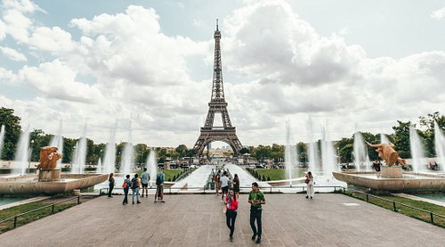
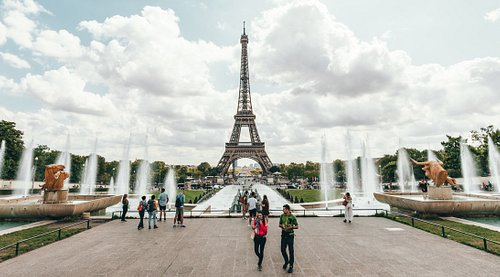

Explorez Paris
Les revenus influencent le choix des expériences présentées sur cette page : en savoir plus.

 

La Ville Lumière éblouit en tous points
Aucun autre endroit au monde ne fait autant rêver que Paris. La ville séduit par son art, son architecture, sa culture et sa cuisine, mais il y a aussi des merveilles plus discrètes qui n’attendent qu’à être explorées : les ruelles pavées pittoresques, les pâtisseries au coin de la rue et les petits bistrots douillets qui vous invitent à boire un verre de beaujolais. Préparez-vous à vous approprier Paris.
Paris : commencez à organiser !
Créez un voyage pour enregistrer et organiser toutes vos idées et les visualiser sur une carte.
Paris : les immanquables
Se divertir
Des lieux à voir, des rues à explorer et des expériences emblématiques à Paris.
Tout afficherTour eiffel
Tours et plateformes d'observation, Monuments & Points d'intérêt
Arc de Triomphe
Bâtiments architecturaux, Sites historiques
Musée du Louvre
Bâtiments architecturaux, Musées d'art

Musée Rodin
Musées spécialisés
Notre Dame
Bâtiments architecturaux, Sites historiques
Librairie Shakespear and Company
Bibliothèques, Grands magasins

Musée d'Orsay
Musées d'art
Marché aux Puces de Saint-Ouen
Antiquaires, Marchés aux puces & Marchés de rue Saint-Ouen, France À 5,4 kilomètres de Paris

Frenchie
€€€€ · Française, Végétariens bienvenus, Plats sans gluten

114 Faubourg
€€ · Française, Européenne, Végétariens bienvenus

Verjus
€€€ · Française, Européenne, Moderne
ASPIC
€€€€ · Française, Européenne, Saine
Bistro-chic
€€€ · Française, Européenne, Saine, Moderne

Vive les huîtres
€€€€ · Française, Moderne, Bar à vins
Guides de voyageurs

Best summer things to do in Paris | Eatwith
36 articles

Les 10 monuments et musées de Paris à faire
10 articles

Top 10 des choses à faire ou à voir dans le 14ème
10 articles